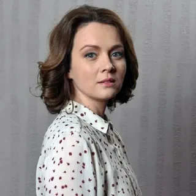
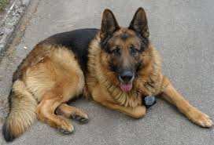

Ольга Олексий Ивановна
Творческая биография Ольги на подмостках развивалась стремительно. От былой робости не осталось
и следа. Впоследствии артистка вызвала немалый интерес у режиссеров и зрителей, заняв свою нишу
на сцене еще в молодости.
Именно театр является для нее любимым местом, здесь она чувствует связь с аудиторией.
Ольга Олексий была задействована во многих имевших успех спектаклях. Наиболее яркими из них
оказались «В плену страстей», «Сон в летнюю ночь», «Госпожа-министерша».
Последняя из перечисленных работ создана по одноименной пьесе сербского писателя Бранислава
Нушича 1929-го. Кинодебют актрисы состоялся в 2007-м. Ее пригласили на главную роль в сериале
«Тормозной путь».
За основу сюжета взята история любви молодой девушки и взрослого семейного человека, которых
сыграли Алла Юганова и Александр Сирин.
Многосерийная лента стала совместным проектом киностудии «Шанс» и «Украинской медийной группы».
Спустя год Олексий засветилась в таких киноработах, как «Неодинокие», «Разлучница» и «Тринадцать
месяцев».

В последней драме напарником артистки по кадру оказался Гоша Куценко, получивший приз «Золотое
яблоко» за лучшую мужскую роль на фестивале «Кино-Ялта».
Прорыв в карьере исполнительницы случился с выходом на экраны трилогии Валерия Шалыги с
говорящими названиями — «1941», «1942» и «1943». Это лента о судьбах людей и о любви, которая
трагически переплетается с военными событиями.
В 2015-м Олексий сделала своим поклонникам приятный сюрприз: на экраны вышла комедия «Пес», в
которой ей достался образ скандалистки и грубиянки Елены Леонидовой. Такой характер актрисе
довелось играть впервые, но она отлично справилась.
Большой проблемой для многих членов съемочной группы во время процесса производства было
наладить контакт с собаками. Однако Ольге удалось быстро подружиться с четвероногими питомцами.
Они не кусали ее, а даже
наоборот, приходили за ласками.
У Ольгиной героини завязался роман с персонажем, в которого перевоплотился Никита Панфилов. Лена и Максим стали одной из любимых пар
российского и украинского телеэкрана.
Сериал имел такой успех, что в 2016-м появилось продолжение. По словам Панфилова, во втором
сезоне «градус шуток увеличился».

В третьем сезоне уже полюбившиеся герои вновь порадовали публику своим появлением. К сожалению,
произошла трагедия: умер пес по кличке Граф.
Создатели оперативно нашли замену — на экране появился его сын Мухтар.
Ольга Олексий продолжила сниматься в очередном продолжении, премьера которого состоялась в
декабре 2019-го. По словам Никиты Панфилова, успех сериала заключается в смешении жанров — это и
комедия, и боевик, и детектив.
В дальнейшем начались съемки новых серий. На экранах они появились в декабре 2020-го. Партнерами Ольги стали Михаил Жонин и Андрей Саминин. Панфилов рассказывал, что не предполагал,
что будет столько сезонов. В середине июня 2021-го прошел показ первых эпизодов шестого сезона. Олексий была замечена на
площадке.
Авторы поделились, что бороться с преступниками доблестным полицейским станет еще сложнее.
Изменения также коснулись главных героев, которые показали себя с неожиданной для зрителей
стороны.